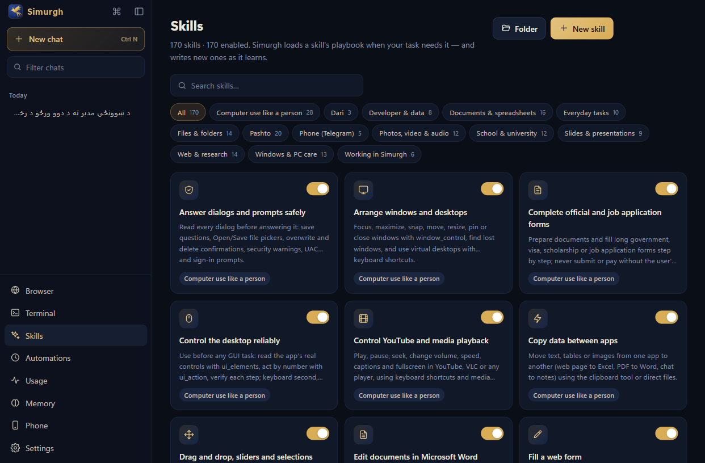
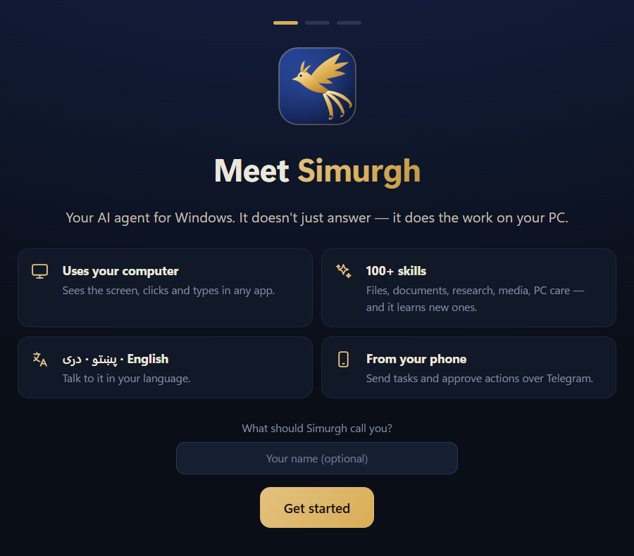

Uses your computer
Sees the screen, clicks and types in any app — and reads apps' real buttons and fields through Windows, so it doesn't guess at pixels.
It doesn't just answer — it does the work on your PC: files, documents, the web, apps and settings. In English, Pashto or Dari.

What it does
Tell it what you need in your own words. Simurgh plans the steps, uses the right tools, shows you each step and asks before anything that matters.
Sees the screen, clicks and types in any app — and reads apps' real buttons and fields through Windows, so it doesn't guess at pixels.
Runs the Claude Code installed on your PC in Simurgh's window: its commands, modes, memory and sessions — plus Simurgh's skills and safety checks.
Pashto, Dari, documents, slides, school and university, web research, photos and video, PC care and more — and it writes new skills as it learns.
Word, PDF, Excel and PowerPoint — and it looks at every page before it hands the file over, so you don't find the mistakes.
Searches, reads pages, compares prices, fills forms and keeps your bookmarks and history — and never submits or pays without asking you.
Tasks that run once, daily, weekly or every few minutes — results arrive as a notification or on your phone.
Send tasks and files over Telegram, approve actions, ask for a screenshot or stop a task while you're away.
Asks before anything that can't be taken back, keeps an Undo for file changes, asks before closing a window you had open and stops at Ctrl+Alt+X.
Your name, your files, how you like things done — kept on your PC, and you can see and delete every note.
Pashto · Dari · English
Simurgh reads and writes Pashto and Dari the way people in Afghanistan do — and checks its own work.

Skills
Each skill is a short, tested playbook: forms, CVs, reports, slide decks, research, school work, PC clean-ups, Telegram, and much more. Turn any off, or let Simurgh write a new one after it learns something.

Your choice of AI
Sign in with an account, add an API key, or run a model on your own PC. You can switch any time.
Install
No account with us, no administrator rights needed.
Get Simurgh-Setup.exe with the button on this page (about 115 MB).
It installs for your Windows account and opens Simurgh. A shortcut goes on your desktop and in the Start menu.
Sign in with ChatGPT or OpenRouter, set up Claude Code, add a key — then just say what you need.
If Windows says “Windows protected your PC”: click More info, then Run anyway. Windows shows this for new apps whose installer isn't signed yet; Simurgh's will be.
Privacy
%APPDATA%\Simurgh; files it makes go to Documents\Simurgh.
Questions
Yes. The AI service you connect may have its own price: a ChatGPT or Claude plan you already pay for, OpenRouter credits or API usage. Ollama runs free on your own PC.
Windows 10 and Windows 11, 64-bit. Mac and Linux are not supported yet.
For online AI services, yes. With Ollama it can work offline, but a local model needs a strong PC to be fast.
Simurgh shows every step, asks before anything important or permanent, keeps an Undo for file changes and asks before it closes any window you already had open. Press Ctrl+Alt+X — or flick the mouse into the top-left corner — to stop it at once.
Windows Settings → Apps → Installed apps → Simurgh → Uninstall. Your chats and settings stay in %APPDATA%\Simurgh until you delete that folder.